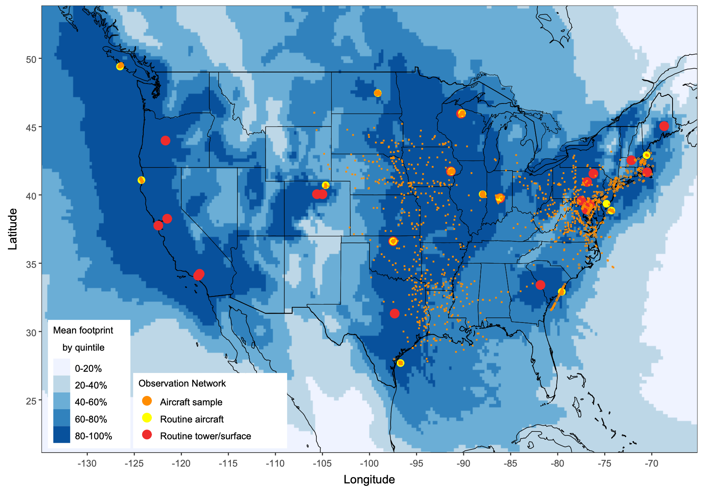
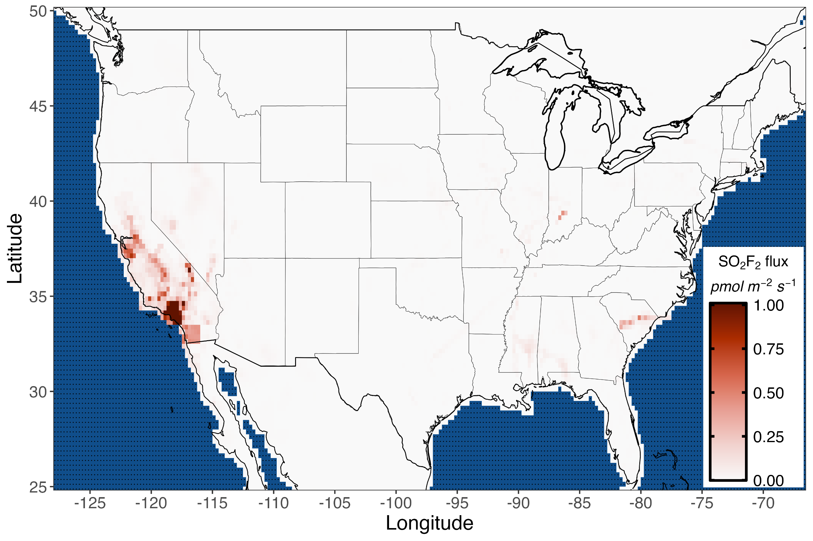

Post-Doctoral Research Associate
Cooperative Institute for Research in Environmental Sciences (CIRES), University of Colorado Boulder
NOAA Global Monitoring Laboratory
I am currently a Post-Doctoral Research Associate at the Cooperative Institute for Research in Environmental Sciences (CIRES), University of Colorado Boulder and the NOAA Global Monitoring Laboratory. I recently completed my Ph.D. at Johns Hopkins University in the Department of Environmental Health and Engineering.
In my work, I use atmospheric measurements of greenhouse gases and air pollutants, along with atmospheric models, inverse models, and process/physics-based models to better understand surface emissions of planet-warming and/or stratospheric ozone-depleting gases. I study both natural (biogenic) and human-caused (anthropogenic) emissions sources with the goal of holistically understanding changes and variations in Earth's atmospheric composition.
I'm broadly interested in greenhouse gases, ozone-depleting substances, air pollution, atmospheric chemistry, climate change, Earth systems, sustainability, and environmental justice.
My current focus is on carbon cycle and drought dynamics in the Western United States, integrating NOAA GGGRN flask measurements, OCO-2 satellite retrievals, and the Simple Biosphere Model v4 (SiB4).


Featured · 2024
Using NOAA GGGRN flask measurements and a regional inverse model, we found that California is responsible for the majority of U.S. emissions of sulfuryl fluoride (SO₂F₂) — a potent greenhouse gas used primarily as a structural fumigant for termites — driving recent national trends.
A decline in methyl bromide emissions from the U.S. over 2007–2022
In preparation, 2026
U.S. emissions of C₃–C₅ alkanes from fossil fuel activities and associated impacts on surface-level ozone
In preparation, 2026
No detectable inflection point in US oil and gas methane emissions following the Inflation Reduction Act
In Review, 2026
Satellite-based emissions estimate indicates progress toward China's methane mitigation goals
In Review, PNAS, 2026
Methane fluxes from Arctic & boreal North America: comparisons between process-based estimates and atmospheric observations
Atmospheric Chemistry and Physics, 2026 · https://doi.org/10.5194/acp-26-1229-2026
Spatial and Temporal Distribution of Global Wetland Methane Emissions During 2019–2020 Estimated From Satellite Observations
JGR Atmospheres, 2025 · https://doi.org/10.1029/2025JD044354
California dominates U.S. emissions of the pesticide and potent greenhouse gas sulfuryl fluoride
Communications Earth & Environment, 2024 · https://doi.org/10.1038/s43247-024-01294-x
U.S. ethane emissions and trends estimated from atmospheric observations
Environmental Science & Technology, 2024 · https://doi.org/10.1021/acs.est.4c00380
The Orbiting Carbon Observatory-2 (OCO-2) and in situ CO₂ data suggest a larger seasonal amplitude of the terrestrial carbon cycle compared to many dynamic global vegetation models
Remote Sensing of Environment, 2024 · https://doi.org/10.1016/j.rse.2024.114326
Inter-Annual Variability in Atmospheric Transport Complicates Estimation of US Methane Emissions Trends
Geophysical Research Letters, 2023 · https://doi.org/10.1029/2022GL100366
Greenhouse Gas Emissions Inventory for the City of Baltimore, 2018–2020
Report for the Baltimore Office of Sustainability, 2022 · https://www.baltimoresustainability.org/wp-content/uploads/2023/04/2020_Baltimore_GHG_inventory_v2.pdf
City of Baltimore 2017 Greenhouse Gas Emissions Inventory Report
Report for the Baltimore Office of Sustainability, 2020 · https://www.baltimoresustainability.org/wp-content/uploads/2021/09/2017_Baltimore_Inventory_v5-1.pdf
Postdoctoral Research Associate
CIRES, University of Colorado Boulder · NOAA Global Monitoring Laboratory · Boulder, CO
Carbon cycle and drought dynamics; integrating NOAA GGGRN flask measurements, OCO-2 satellite data, and the SiB4 land surface model to better understand biospheric responses to drought in the Western United States.
Human Frontier Collective Specialist — GenAI
Scale AI · San Francisco, CA (remote)
Developing evaluation frameworks and contributing climate science and atmospheric chemistry domain expertise to assess and improve next-generation generative AI models.
Doctoral Researcher, Greenhouse Gas Research Group
Johns Hopkins University · Baltimore, MD
Modeled U.S. emissions of sulfuryl fluoride, methyl bromide, and C₃–C₅ alkanes using long-term NOAA GGGRN atmospheric measurements and inverse methods.
Applied Data & Governance Fellow
International Innovation Corps, University of Chicago Law School · Chicago, IL
Research support for large-scale randomized control trials in India, including health insurance and wage insurance experiments. Built data pipelines in Python, R, and Stata.
Ph.D., Geography & Environmental Engineering
Johns Hopkins University · Baltimore, MD
Dissertation: Emissions of trace gas air pollutants inferred from a long-term atmospheric measurement network: from fumigants to fossil fuels
Advisor: Prof. Scot M. Miller (https://greenhousegaslab.org)
M.S., Geophysical Sciences
The University of Chicago · Chicago, IL
Thesis: An Adjoint Trajectory Model of the Perturbed Carbon Cycle
B.S., Applied Mathematics · B.A., Chemistry
University of Rochester · Rochester, NY
Graduated cum laude with Highest Distinction in Chemistry, with Distinction in Mathematics
California the culprit for spike in little-known greenhouse gas more potent than CO₂
Tom Perkins — The Guardian
Thanks to termite tents, California is top U.S. emitter of a planet-warming pesticide
Melody Petersen — Los Angeles Times
California is a hot spot for an untracked greenhouse gas that's way more potent than CO₂
Jack Lee — San Francisco Chronicle
California Leads the Nation in Emissions of a Climate Super-Pollutant, Study Finds
Phil McKenna & Liza Gross — Inside Climate News
A Rare Greenhouse Gas Comes from—Termite Pesticide?
Chelsea Harvey — Scientific American
California emits more of this little-known greenhouse gas than all other US states combined
Sharon Udasin — The Hill
California Termites and the Atmosphere
Alex Wise (host) — Sea Change Radio
California Leads U.S. Emissions of Little-Known Greenhouse Gas
Hannah Robbins — Johns Hopkins Hub
Researcher sheds light on the main source of a rare but destructive greenhouse gas
Danielle Underferth — Johns Hopkins Hub
Termite Fumigation in California Is Fueling the Rise of a Rare Greenhouse Gas
Jenessa Duncombe — Eos Science News (AGU)
CIRES, University of Colorado Boulder
NOAA Global Monitoring Laboratory